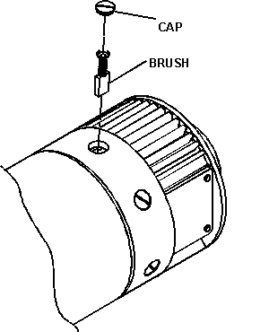

| NOTE: | The brush/cap assembly is spring loaded and the cap will pop out of place once released. |
The brushes should move freely in their holders. If they stick, it is usually due to accumulated carbon dust or a damaged brush holder. If the brush holder is damaged, the motor should be replaced.
Illustration 1: Brush Cap
